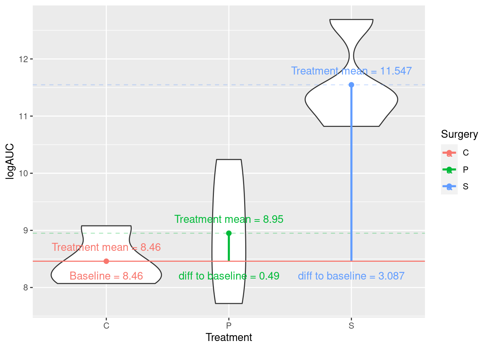

Modelling experimental data
A completely randomised design (CRD) as a linear model
As we’ve seen in the previous module that we can write a linear model with a single explanatory variable as
\[Y_i = \alpha + \beta_1x_i + \epsilon_i\]
When dealing with factor variables we use dummy variables and can write the above as
\[Y_{ik} = \alpha + \tau_k + \epsilon_{ik}\] where \(\tau_k\) is called an effect and represents the difference between the overall average, \(\alpha\), and the average at the \(k_{th}\) treatment level. The errors \(\epsilon_{ik}\) are again assumed to be normally distributed and independent due to the randomisation (i.e., \(\epsilon_{ik} \sim N(0, \sigma^2)\).
Or you might think of the model as
\[Y_{ik} = \mu_k + \epsilon_{ik}\]
where \(Y_{ik}\) is the response (i.e., observed coffee opacity) for the \(i^{th}\) experimental unit (i.e., coffee cup) subjected to the \(k^{th}\) level of the treatment factor (i.e., coffee type). Here \(\mu_k\) are the different (cell) means for each level of the treatment factor. See below for an illustration of this for three factor treatment levels (as in the coffee example above).

Analysis of a CRD in R
In this section we again consider the data containing logAUC values for 12 rats subjected to three different treatments (Surgery), C, P, and S:
| Surgery | Rat | logAUC |
|---|---|---|
| C | 1 | 8.49 |
| C | 2 | 8.20 |
| C | 3 | 9.08 |
| C | 4 | 8.07 |
| P | 1 | 10.24 |
| P | 2 | 7.72 |
| P | 3 | 9.34 |
| P | 4 | 8.50 |
| S | 1 | 11.31 |
| S | 2 | 12.69 |
| S | 3 | 11.37 |
| S | 4 | 10.82 |
To read the data directly into R you can use
We could analyse these data using aov():
rats_aov <- aov(logAUC ~ Surgery, data = rats)
summary(rats_aov)
## Df Sum Sq Mean Sq F value Pr(>F)
## Surgery 2 22.026 11.013 16.36 0.00101 **
## Residuals 9 6.059 0.673
## ---
## Signif. codes: 0 '***' 0.001 '**' 0.01 '*' 0.05 '.' 0.1 ' ' 1Hypothesis: We test the Null hypothesis, \(H_0\), population (Surgery) means are the same on average verses the alternative hypothesis, \(H_1\), that at least one differs from the others!
Probability of getting an F-statistic at least as extreme as the one we observe (think of the area under the tails of the curve below) p-value Pr(>F)= 0.001 tells us we have sufficient evidence to reject \(H_0\) at the 1% level of significance
Alternatively, we could use lm():
rats_lm <- lm(logAUC ~ Surgery, data = rats)
summary(rats_lm)$coef
## Estimate Std. Error t value Pr(>|t|)
## (Intercept) 8.4600 0.4102531 20.6214144 6.930903e-09
## SurgeryP 0.4900 0.5801856 0.8445574 4.202408e-01
## SurgeryS 3.0875 0.5801856 5.3215734 4.799872e-04So, what does this tell us about which pairs of means are different?
To carry out a pair-wise comparisons of means we can use two-sample t-tests, calculating our observed t-value where \(\text{t-value} = \frac{\text{Sample Difference}_{ij} - \text{Difference assuming } H_0 \text{ is true}_{ij}}{\text{SE of } \text{Sample Difference}_{ij}}\). Here, \(\text{Sample Difference}_{ij}\) = Difference between pair of sample means. We can then compute the p-value for observed t-value.
The output above has already done this for us:
(Intercept) = \(\text{mean}_C\) = 8.46
SE of (Intercept) = SE of \(\text{mean}_C\) = SEM = 0.4102531
\(\text{Surgery}_P\) = \(\text{mean}_P\) – \(\text{mean}_C\) = 0.49
SE of \(\text{Surgery}_P\) = SE of (\(\text{mean}_P\) - \(\text{mean}_C\) ) = SED = 0.5801856

Hypotheses being tested
The t value and Pr (>|t|) are the t-statistic and p-value for testing the null hypotheses listed below
1. Mean abundance is zero for C population
2. No difference between the population means of P and C
3. No difference between the population means of S and C
We’re interested in 2 and 3, but not necessarily 1!
F-test:
anova(rats_lm)
## Analysis of Variance Table
##
## Response: logAUC
## Df Sum Sq Mean Sq F value Pr(>F)
## Surgery 2 22.0263 11.0132 16.359 0.001006 **
## Residuals 9 6.0591 0.6732
## ---
## Signif. codes: 0 '***' 0.001 '**' 0.01 '*' 0.05 '.' 0.1 ' ' 1The same as aov() in fact aov() is calling lm() in the background.
Diagnostic plots
Carrying out any linear regression recall that we have some key assumptions
- Independence
- There is a linear relationship between the response and the explanatory variables
- The residuals have constant variance
- The residuals are normally distributed

What do you think? Look back at module 2.
A Factorial experiment (as a CRD)

Equal replications (balanced design)
Data Global metabolic profiling and comparison of relative abundances of proteins (logAUC) in the inner and outer left ventricle (innerLV and outerLV) wall of diabetic and healthy male Wistar rats. To read the data directly into R you can use
| Organ | Diabetic | Healthy |
|---|---|---|
| innerLV | n = 3 | n = 3 |
| outerLV | n = 3 | n = 3 |
| Disease | Organ | Animal | Sample | logAUC |
|---|---|---|---|---|
| Healthy | innerLV | 1 | 1 | 9.40 |
| Healthy | outerLV | 2 | 2 | 8.83 |
| Healthy | innerLV | 3 | 1 | 10.33 |
| Healthy | outerLV | 4 | 2 | 10.49 |
| Healthy | innerLV | 5 | 1 | 9.74 |
| Healthy | outerLV | 6 | 2 | 10.98 |
| Diabetic | innerLV | 7 | 1 | 7.92 |
| Diabetic | outerLV | 8 | 2 | 9.37 |
| Diabetic | innerLV | 9 | 1 | 8.69 |
| Diabetic | outerLV | 10 | 2 | 11.31 |
| Diabetic | innerLV | 11 | 1 | 7.01 |
| Diabetic | outerLV | 12 | 2 | 9.29 |
Fitting models with interactions using lm()
## change to factors (saves errors later on)
factorial$Disease <- as.factor(factorial$Disease)
factorial$Organ <- as.factor(factorial$Organ)
fac_lm <- lm(logAUC ~ Disease*Organ, data = factorial)
summary(fac_lm)$coefficients
## Estimate Std. Error t value Pr(>|t|)
## (Intercept) 7.873333 0.5405835 14.564508 4.841215e-07
## DiseaseHealthy 1.950000 0.7645006 2.550685 3.413826e-02
## OrganouterLV 2.116667 0.7645006 2.768692 2.434579e-02
## DiseaseHealthy:OrganouterLV -1.840000 1.0811671 -1.701865 1.271934e-01So, the full model is
\[ \begin{aligned} \operatorname{\widehat{logAUC}} &= 7.87 + 1.95(\operatorname{Disease}_{\operatorname{Healthy}}) + 2.12(\operatorname{Organ}_{\operatorname{outerLV}}) - 1.84(\operatorname{Disease}_{\operatorname{Healthy}} \times \operatorname{Organ}_{\operatorname{outerLV}}) \end{aligned} \]
The three gobal null hypotheses being tested are
- \(H_0: \hat{\mu}_{\text{Diabetic}} = \hat{\mu}_{\text{Healthy}}\)
- \(H_0: \hat{\mu}_{\text{innerLV}} = \hat{\mu}_{\text{outerLV}}\)
- \(H_0: \hat{\mu}_{\text{Diabetic,innerLV}} = \hat{\mu}_{\text{Diabetic,outerLV}} = \hat{\mu}_{\text{Healthy,innerLV}} = \hat{\mu}_{\text{Healthy,outerLV}}\)
anova(fac_lm)
## Analysis of Variance Table
##
## Response: logAUC
## Df Sum Sq Mean Sq F value Pr(>F)
## Disease 1 3.1827 3.1827 3.6304 0.09320 .
## Organ 1 4.2960 4.2960 4.9003 0.05775 .
## Disease:Organ 1 2.5392 2.5392 2.8963 0.12719
## Residuals 8 7.0135 0.8767
## ---
## Signif. codes: 0 '***' 0.001 '**' 0.01 '*' 0.05 '.' 0.1 ' ' 1What conclusions do you draw?
Note with a balanced design ordering of term doesn’t matter. For example,
fac_lm <- lm(logAUC ~ Disease*Organ, data = factorial)
anova(fac_lm)
## Analysis of Variance Table
##
## Response: logAUC
## Df Sum Sq Mean Sq F value Pr(>F)
## Disease 1 3.1827 3.1827 3.6304 0.09320 .
## Organ 1 4.2960 4.2960 4.9003 0.05775 .
## Disease:Organ 1 2.5392 2.5392 2.8963 0.12719
## Residuals 8 7.0135 0.8767
## ---
## Signif. codes: 0 '***' 0.001 '**' 0.01 '*' 0.05 '.' 0.1 ' ' 1
fac_lm_2 <- lm(logAUC ~ Organ*Disease, data = factorial)
anova(fac_lm_2)
## Analysis of Variance Table
##
## Response: logAUC
## Df Sum Sq Mean Sq F value Pr(>F)
## Organ 1 4.2960 4.2960 4.9003 0.05775 .
## Disease 1 3.1827 3.1827 3.6304 0.09320 .
## Organ:Disease 1 2.5392 2.5392 2.8963 0.12719
## Residuals 8 7.0135 0.8767
## ---
## Signif. codes: 0 '***' 0.001 '**' 0.01 '*' 0.05 '.' 0.1 ' ' 1Unqual replications (unbalanced design)
Here, we consider a subset of the data above.
| Organ | Diabetic | Healthy |
|---|---|---|
| innerLV | n = 3 | n = 1 |
| outerLV | n = 2 | n = 2 |
| Disease | Organ | Animal | Sample | logAUC |
|---|---|---|---|---|
| Healthy | outerLV | 4 | 2 | 10.49 |
| Healthy | innerLV | 5 | 1 | 9.74 |
| Healthy | outerLV | 6 | 2 | 10.98 |
| Diabetic | innerLV | 7 | 1 | 7.92 |
| Diabetic | outerLV | 8 | 2 | 9.37 |
| Diabetic | innerLV | 9 | 1 | 8.69 |
| Diabetic | innerLV | 11 | 1 | 7.01 |
| Diabetic | outerLV | 12 | 2 | 9.29 |
Fitting models with interactions using lm()
Note: order matters. For example,
fac_lm <- lm(logAUC ~ Disease*Organ, data = unbalanced_nafree)
anova(fac_lm)
## Analysis of Variance Table
##
## Response: logAUC
## Df Sum Sq Mean Sq F value Pr(>F)
## Disease 1 7.1102 7.1102 18.4955 0.01264 *
## Organ 1 3.1149 3.1149 8.1027 0.04656 *
## Disease:Organ 1 0.0913 0.0913 0.2376 0.65145
## Residuals 4 1.5377 0.3844
## ---
## Signif. codes: 0 '***' 0.001 '**' 0.01 '*' 0.05 '.' 0.1 ' ' 1
fac_lm_2 <- lm(logAUC ~ Organ*Disease, data = unbalanced_nafree)
anova(fac_lm_2)
## Analysis of Variance Table
##
## Response: logAUC
## Df Sum Sq Mean Sq F value Pr(>F)
## Organ 1 5.7291 5.7291 14.9029 0.01814 *
## Disease 1 4.4960 4.4960 11.6953 0.02678 *
## Organ:Disease 1 0.0913 0.0913 0.2376 0.65145
## Residuals 4 1.5377 0.3844
## ---
## Signif. codes: 0 '***' 0.001 '**' 0.01 '*' 0.05 '.' 0.1 ' ' 1The three global null hypotheses being tested are (essentially) the same
- \(H_0: \hat{\mu}_{\text{Diabetic}} = \hat{\mu}_{\text{Healthy}}\)
- \(H_0: \hat{\mu}_{\text{innerLV}} = \hat{\mu}_{\text{outerLV}}\)
- \(H_0: \hat{\mu}_{\text{Diabetic,innerLV}} = \hat{\mu}_{\text{Diabetic,outerLV}} = \hat{\mu}_{\text{Healthy,innerLV}} = \hat{\mu}_{\text{Healthy,outerLV}}\)
However, now the order the terms affects the estimation. Look carefully at the anova() outputs above; what to you notice about the sums of squares (Sum Sq) values?
For a balanced two-factor experiment (e.g., in the previous section) partitioning of the sums of squares (\(SS\)) is additive:
\[SS_\text{Treatment} = SS_\text{Disease} + SS_\text{Organ} + SS_\text{Disease:Organ}.\]
The order in which the main effects are added to the model does not matter. However, for an unbalanced design this is not the case as the sums of squares are calculated sequentially. Note that sequentially calculated \(SS\) are known as Type I \(SS\).
Sums of squares (\(SS\))
Sequential (Type I \(SS\))
As a term enters the model its \(SS\) is calculated, which is then subtracted from the total \(SS\). This then reduces the available \(SS\) for the next term entering the model. When treatment combinations in a factorial experiment are unequally replicated, their effects are not mutually independent, so that the order in which terms enter the model matters.
Considering the data above if we include Disease as a main effect first (i.e., Disease*Organ) then the \(SS_\text{Disease}\) is calculated first ignoring the Organ main effect. Here, some Organ information is confounded with Disease information (i.e., variation due to Organ confounded by the variation due to Disease). Then \(SS_\text{Organ}\) are calculated having been adjusted for the Diease main effect. This now only contains Organ information (i.e., variation due to Organ effect) since all the Disease information was eliminated in previous step. Finally, \(SS_\text{Disease:Organ}\) are calculated adjusted for both \(SS_\text{Disease}\) and \(SS_\text{Organ}\). Here, there is no information left relating to Disease or Organ main effects.
What does this look like?
For Disease*Organ we calculate \(SS_\text{Disease}\) ignoring any Organ effect (if you are unsure what each line of code is doing I suggest you run it line by line to see what’s being done at each step).
unbalanced_nafree %>%
mutate(grand_mean = mean(logAUC)) %>%
group_by(Disease) %>%
summarise(n = n(),
treatment_mean = mean(logAUC),
grand_mean = mean(grand_mean)) %>%
mutate(ss_disease = n * (treatment_mean - grand_mean)^2) %>%
pull(ss_disease) %>%
sum()
## [1] 7.110201This matches, as we’d expect, \(SS_\text{Disease}\) calculated from the Disease*Organ model above.
But, that about the sequential \(SS\), a simple way to think about this is in terms of sequential models:
## Null model.
fit.null <- lm(logAUC ~ 1, data = unbalanced_nafree)
## Only Factor Disease.
fit.a <- lm(logAUC ~ Disease, data = unbalanced_nafree)
## Factors Disease and Organ.
fit.ab <- lm(logAUC ~ Disease + Organ, data = unbalanced_nafree)
## Factors Disease and Organ with interaction.
fit.abi <- lm(logAUC ~ Disease*Organ, data = unbalanced_nafree)
## ANOVA table, as above
anova(fit.abi)
## Analysis of Variance Table
##
## Response: logAUC
## Df Sum Sq Mean Sq F value Pr(>F)
## Disease 1 7.1102 7.1102 18.4955 0.01264 *
## Organ 1 3.1149 3.1149 8.1027 0.04656 *
## Disease:Organ 1 0.0913 0.0913 0.2376 0.65145
## Residuals 4 1.5377 0.3844
## ---
## Signif. codes: 0 '***' 0.001 '**' 0.01 '*' 0.05 '.' 0.1 ' ' 1
## First line.
sum(residuals(fit.null)^2) - sum(residuals(fit.a)^2)
## [1] 7.110201
## Second line.
sum(residuals(fit.a)^2) - sum(residuals(fit.ab)^2)
## [1] 3.114926
## Third line.
sum(residuals(fit.ab)^2) - sum(residuals(fit.abi)^2)
## [1] 0.09134405
## Final line.
sum(residuals(fit.abi)^2)
## [1] 1.537717Type II \(SS\)
Rather than calculating \(SS\) sequentially we can calculate the \(SS\) for a given effect adjusting for all other effects listed in the model. This means that the \(SS_\text{A}\) and \(SS_\text{B}\) main effects will both be adjusted for each other (since neither contains the other), but will not be adjusted for \(SS_\text{A:B}\) (since it contains both A and B). \(SS_\text{A:B}\) will be adjusted for both main effects.
In our example above \(SS_\text{Disease}\) and \(SS_\text{Organ}\) main effects will both be adjusted for each other, but will not be adjusted for \(SS_\text{A:B}\) and \(SS_\text{Disease:Organ}\) will be adjusted for both main effects.
We can calculate the Type II \(SS\) table in R buy either
- Extracting the main effect rows that have been adjusted for the other model terms from two Type I \(SS\) tables (each one having the terms specified in a different order):
## Type II Organ SS
anova(fac_lm)[2, ]
## Analysis of Variance Table
##
## Response: logAUC
## Df Sum Sq Mean Sq F value Pr(>F)
## Organ 1 3.1149 3.1149 8.1027 0.04656 *
## ---
## Signif. codes: 0 '***' 0.001 '**' 0.01 '*' 0.05 '.' 0.1 ' ' 1
## Type II Disease SS
anova(fac_lm_2)[2, ]
## Analysis of Variance Table
##
## Response: logAUC
## Df Sum Sq Mean Sq F value Pr(>F)
## Disease 1 4.496 4.496 11.695 0.02678 *
## ---
## Signif. codes: 0 '***' 0.001 '**' 0.01 '*' 0.05 '.' 0.1 ' ' 1
## Type II Organ:Disease/Disease:Organ
anova(fac_lm_2)[3, ]
## Analysis of Variance Table
##
## Response: logAUC
## Df Sum Sq Mean Sq F value Pr(>F)
## Organ:Disease 1 0.091344 0.091344 0.2376 0.6514or,
- Using an inbuilt
Rfunction (does not matter which order the model has the terms specified):
car::Anova(fac_lm, type = 2)
## Anova Table (Type II tests)
##
## Response: logAUC
## Sum Sq Df F value Pr(>F)
## Disease 4.4960 1 11.6953 0.02678 *
## Organ 3.1149 1 8.1027 0.04656 *
## Disease:Organ 0.0913 1 0.2376 0.65145
## Residuals 1.5377 4
## ---
## Signif. codes: 0 '***' 0.001 '**' 0.01 '*' 0.05 '.' 0.1 ' ' 1Note: Type III \(SS\) and beyond are not covered in this course but I would recommend reading this recent paper for an intuitive overview.
Marginal means
Balanced design
| Disease | Organ | logAUC |
|---|---|---|
| Healthy | innerLV | 9.40 |
| Healthy | outerLV | 8.83 |
| Healthy | innerLV | 10.33 |
| Healthy | outerLV | 10.49 |
| Healthy | innerLV | 9.74 |
| Healthy | outerLV | 10.98 |
| Diabetic | innerLV | 7.92 |
| Diabetic | outerLV | 9.37 |
| Diabetic | innerLV | 8.69 |
| Diabetic | outerLV | 11.31 |
| Diabetic | innerLV | 7.01 |
| Diabetic | outerLV | 9.29 |
| Grand mean |
|---|
| 9.447 |
| Disease | Organ | log AUC mean |
|---|---|---|
| Diabetic | innerLV | 7.873 |
| Diabetic | outerLV | 9.990 |
| Healthy | innerLV | 9.823 |
| Healthy | outerLV | 10.100 |
| Organ | log AUC mean |
|---|---|
| innerLV | 8.848 |
| outerLV | 10.045 |
| Disease | log AUC mean |
|---|---|
| Diabetic | 8.932 |
| Healthy | 9.962 |
Unbalanced design (Unequal replication due to missing data)
| Disease | Organ | logAUC |
|---|---|---|
| Healthy | innerLV | NA |
| Healthy | outerLV | NA |
| Healthy | innerLV | NA |
| Healthy | outerLV | 10.49 |
| Healthy | innerLV | 9.74 |
| Healthy | outerLV | 10.98 |
| Diabetic | innerLV | 7.92 |
| Diabetic | outerLV | 9.37 |
| Diabetic | innerLV | 8.69 |
| Diabetic | outerLV | NA |
| Diabetic | innerLV | 7.01 |
| Diabetic | outerLV | 9.29 |
| Grand mean |
|---|
| 9.186 |
| Disease | Organ | log AUC mean |
|---|---|---|
| Diabetic | innerLV | 7.873 |
| Diabetic | outerLV | 9.330 |
| Healthy | innerLV | 9.740 |
| Healthy | outerLV | 10.735 |
Everything is as we’d expect up until now, but what about the marginal means? The, perhaps, most obvious way would be to do the following (i.e., ignore subgroups, hence give all observations equal weight)?
unbalanced_nafree %>%
dplyr::select(c(Disease, logAUC)) %>%
group_by(Disease) %>%
summarise(Mean = mean(logAUC))
## # A tibble: 2 × 2
## Disease Mean
## <fct> <dbl>
## 1 Diabetic 8.46
## 2 Healthy 10.4However, as a result of this the means are biased towards groups with greater replication! To avoid this we give the subgroups (Organ) cell means equal weight (this is sometimes called the least squares mean):
unbalanced_nafree %>%
dplyr::select(c(Disease, Organ, logAUC)) %>%
group_by(Organ, Disease) %>%
mutate(n = n()) %>% ## count observations in each group
## then calculate weighted mean based on the no. observations
summarise(weighted_mean = weighted.mean(logAUC, w = 1/n)) %>%
group_by(Disease) %>% ## calculate mean of weighted means
summarise(mean = mean(weighted_mean))
## # A tibble: 2 × 2
## Disease mean
## <fct> <dbl>
## 1 Diabetic 8.60
## 2 Healthy 10.2Now see if you can do the same across Organ to get
| Organ | mean |
|---|---|
| innerLV | 8.807 |
| outerLV | 10.032 |
What does all of this tell us? When calculating marginal means for unbalanced designs we need to be careful! Luckily there are inbuilt functions in R that do this correctly for us! See the next section for an example using the predictmeans function from the predictmeans package.